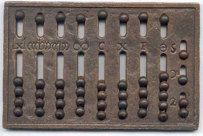

In today’s day and age, we almost take computers for granted because they are so accessible. In fact, if you were to ask a modern teenager what
life was like before Instagram and Wi-Fi they would be incapable of telling you and would probably shudder at the thought of having to live in such
times. However, there was a time before computing even if those times seem archaic in today’s fast-paced society. The history of computing starts
before you might imagine, in around 3000 B.C.E., with the abacus. This leads us all the way to the modern day technology we all know and love, or
at least can’t live without.
The aforementioned abacus was a counting device. It was a board with grooves in it where one could slide beans or pebbles and with these beads
or pebbles one could count. This device was one of the world's earliest “calculators” and set in motion what would one day be known as computing.
Moving up the time line quite a bit the next breakthrough in computing would lie with Blaise Pascal who would invent the first calculator in
1642 C.E. After that came the first punch card in the 1800s then the first electronic computer in 1944. Following close behind came mainframes (1950s),
minicomputers (1960s), microcomputers (1970s), microcomputer systems (1980s), and finally the infamous internet (1990s). Have you noticed how the
intervals between these inventions become shorter and shorter. Computing has advanced quickly with most of its advances happening in this century.

When one takes the time to go back and research the history of computing it can bring to light some pretty interesting things. For one, computer
were used to crack codes during World War II. The German forces had an encoding mechanism that they named Enigma and were confident that no one
could crack it. Fortunately for the Allies this was not the case and the British were able to crack Enigma’s code with the help of early computers.
With this action human being started what would be an age long love affair with technology one we can’t seem to escape from in the modern day. Keep
in mind this was years before the internet would even be suggested. It’s a bit difficult to imagine now but it’s still a very important part of
computing history. To learn more you can go on here:
Coding in WWII
The internet is equally loved and hated. It’s become a something we love to hate and hate to love but one thing can be unanimously agreed upon it’s
impossible to escape its clutches. Whether you work in computer programing or are a high school teacher chances are you have to use the internet in some
form or another. We know the internet is fairly new so the million dollar questions are these: How was it created? How does this relate to
computing? The predecessor to the internet was something called ARPANET that eventually evolved into the internet we know today. There wasn’t one sole
inventor but some names do come up frequently when anyone talks about the internet’s beginnings. We won’t be getting into that but if you want to
learn more about the history of the internet you might want to go here:
History of the Internet
Another memorable aspect of the internet was how it was marketed to the general public back when it wasn’t so widely known and used. There used to be
commercials to encourage people to use the internet. Here's one that you might enjoy:
One question you still might be asking is how does this relate to computing? The answer is simple
enough. The internet revolutionized computing; it made possible what was considered only science-fiction at that time. No one in World War II could
imagine what we know as the internet today to be possible the same that some of us couldn’t imagine living without it.
Of course this isn’t a complete list on the history of computing in fact it’s not even close to the entire picture. The full history of computing could
fill several books and then still have enough information for a movie. Regardless of whether or not this is a complete history of computing the topic
that were covered are important to its history, even if they are only pieces in a much larger puzzle.